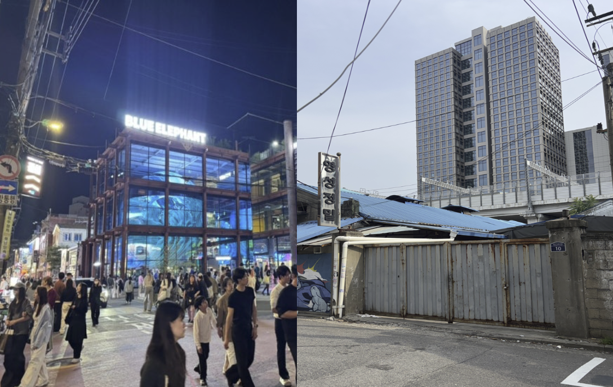
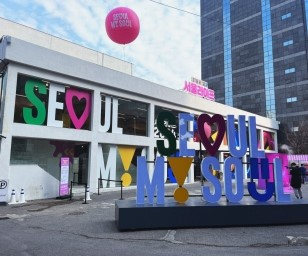
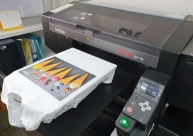

SCROLL
INTRODUCTION
기획·출력·후가공·제본이 반경 500m 안에 집적된 성수동의 인쇄 클러스터. 철제 셔터 뒤에 숨겨진 도시의 보이지 않는 생산 엔진을 보존합니다.
대상 가로의 78%에서 보도가 확보되지 않습니다. 조업 차량과 지게차가 점령한 골목을 시민이 걸을 수 있는 열린 통로로 되돌립니다.
전통 인쇄 산업의 정체성을 체험·창작·브랜딩으로 연결해, 골목 자체를 도시의 문화 콘텐츠로 전환하는 마스터플랜을 제안합니다.

PRINT HISTORY
1960년대부터 오늘날까지, 성수동 인쇄 산업의 변천을 영상으로 기록합니다.
WHY PRINTING

성수동 3대 준공업 중 가장 큰 비율을 차지하는 북측 인쇄 지대는 성수동의 급격한 성장 속에서 홀로 소외되어 있다.

성수동의 트렌디한 패션, 디자인 스타트업, 팝업스토어의 수많은 아이디어를 눈앞의 물질로 구현해 주는 가장 가까운 공생적 파트너이다.

단순한 종이 인쇄를 넘어, 성수동 고유의 감성과 디자인이 결합한 고부가가치 시각 문화 산업으로 진화할 수 있다.
INDUSTRY PERSPECTIVE
일본의 인쇄 산업은 디지털화로 인해 전성기 대비 출하액과 사업장 수가 50% 이상 감소하는 한계에 직면해 있습니다.
인쇄 시설이 덥고 열악하다는 부정적인 이미지가 지배적이어서, 가로 내 우수한 청년 인재 유입을 막는 요소가 되고 있습니다.
대중들에게는 단순히 전통적인 책이나 신문 지면만을 인쇄하여 납품하는 닫힌 산업이라는 인식이 강하게 자리 잡고 있습니다.
전통 출판 시장은 줄어들었을지 몰라도, 현대 브랜드들이 필요로 하는 맞춤형 상업 인쇄 및 굿즈 시장은 가로 내에서 급성장 중입니다.
단순 제조를 넘어 크리에이터나 브랜드 고객과 긴밀하게 상호작용하며 시각적 문제를 함께 해결해 나가는 고도화된 협력 산업입니다.
영세 사업체와 종사자 수는 표면적으로 감소하고 있으나, 스마트 기술과의 융합을 통해 총 출하액과 부가가치는 지속적으로 증가하고 있습니다.